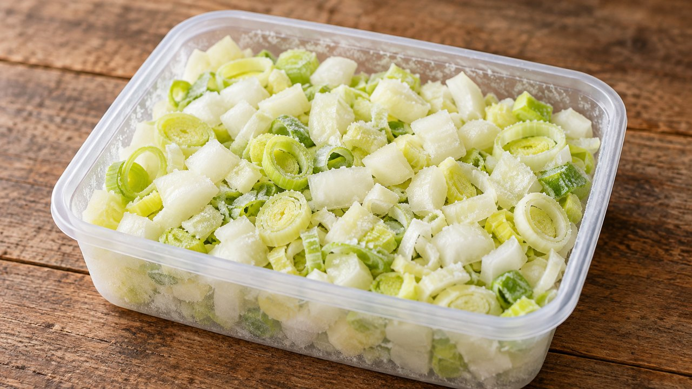

Chopped Onion and Leek Freezer Mix
Weeknight · Freezing · About 20 min active prep; total estimate 4 hr 20 min including freezing. Follow the doneness endpoint rather than the clock.
Yield: About 1½ lb before trimming losses

Ingredients
- 1 lb yellow, sweet or red onions, weighed before trimming
- 8 oz leeks, white and pale green parts
Directions
- Peel and wash onions, then dice into approximately ¼-inch pieces. Split leeks lengthwise and rinse thoroughly between layers to remove grit; slice thinly and drain very well.
- Spread onions and leeks separately on lined freezer trays in thin layers. Freeze until firm.
- Combine in cooking portions and immediately seal in labeled freezer bags with excess air removed. Keep frozen.
- Use directly from frozen in soups, braises or sautéed bases, cooking until tender. Do not expect fresh-onion or leek texture.
Notes & serving ideas
NCHFP supports diced onion freezing without blanching; UNH includes cut leeks among no-blanch exceptions. MSU advises that frozen leeks can become mushy and bitter. Try a small batch before committing a large harvest. Green onions may be frozen separately, but are not weighed in this batch.
Harvest reference batch: 1 lb yellow onions. Only this primary crop is deducted; secondary ingredients and finished yields are not calculated.
Review & safe storage
Original recipe: Family Recipes culinary preparation informed by the references below; the exact formula and storage life have not been laboratory validated or kitchen-tested here. References do not validate it for canning.
Keep frozen at 0°F (−18°C) or below. Thaw in the refrigerator at 40°F (4°C) or below, or use directly in cooking as directed. Use thawed portions within 3 days as a conservative household practice. This recipe is not shelf-stable.
Work with clean hands, sound produce and clean equipment. Refrigerate prepared perishables promptly, within 2 hours (1 hour above 90°F / 32°C); cool hot mixtures in shallow small containers. Never thaw perishables on the counter.